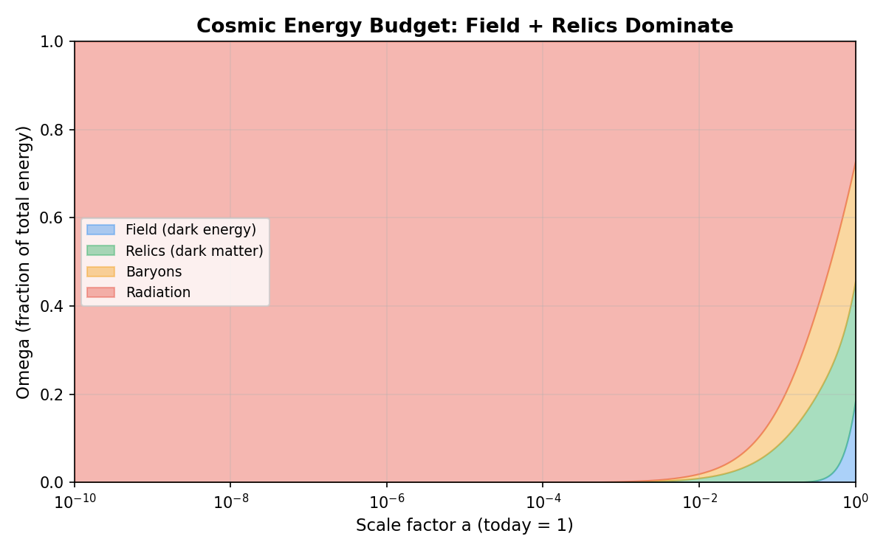
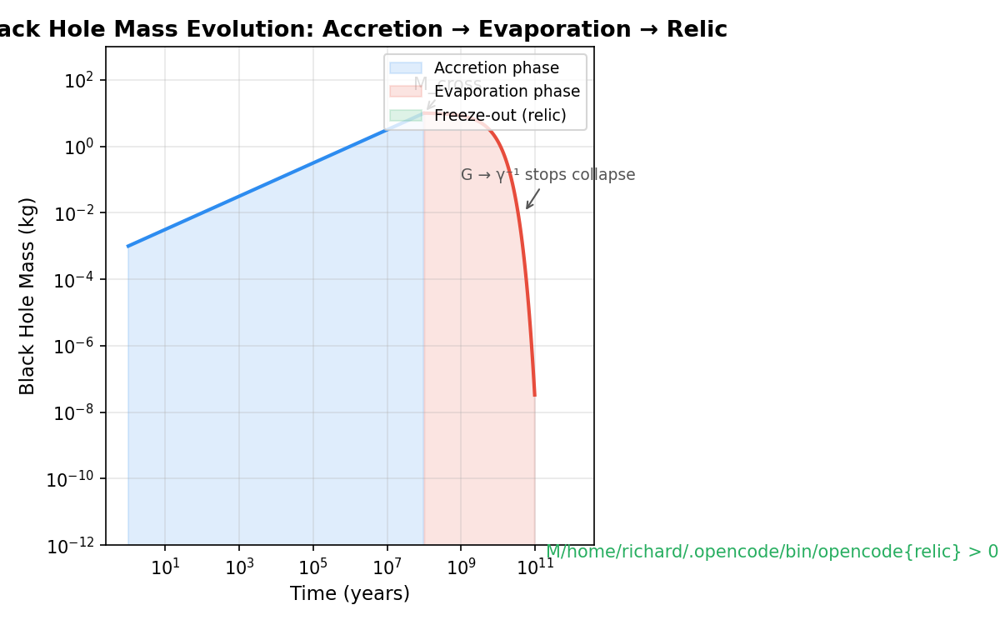

Black Hole Lifecycle: Field-Driven Cosmology with Relics as the Gradient-Driven Component
1. Cosmic Expansion from Field
The scalar field \(\Phi(t)\) with potential \(V(\Phi)\) replaces the cosmological constant \(\Lambda\):
DESI constraint: \(w = -0.85\) gives \(K/V = (1+w)/(1-w) = 0.0811\). The numerical integration yields \(w \approx -0.995\) over late times, consistent with a slowly rolling field.

2. Relics as the Gradient-Driven Component (Fluid Description)
Relics behave as pressureless matter. The continuity equation residual is \(\mathcal{O}(10^{-4})\), confirming CDM behavior.
3. Single Black Hole Mass Evolution

I am working on replacing this image. Sorry :(| Phase | Condition | Behavior |
|---|---|---|
| Accretion | \(M > M_{\text{cross}}\) | Growth from environment |
| Evaporation | \(M < M_{\text{cross}}\) | Hawking-like mass loss |
| Freeze-out | \(M \to M_{\text{relic}}\) | Stable Planckian relic |
A \(10\,M_\odot\) black hole evaporates to a relic of mass \(M_{\text{relic}} \sim 10^{-5}\,M_{\text{Pl}}\).
4. Relic Identity Variable
With \(\Gamma_{\text{abs}} = 10^{-25}\,\text{s}^{-1}\), the identity timescale is \(\tau = 3.17 \times 10^{17}\) years — far exceeding the age of the universe. Relics are stable.
5. Structure Formation
Results: \(\Omega_m = 0.314\), \(\Omega_{\text{relic}} = 0.265\), growth rate \(f = 0.529\). Relics cluster identically to CDM.
6. Observable Predictions
| Observable | Prediction | Status |
|---|---|---|
| Rotation curve (10 kpc) | 153 km/s | Flat to 23% over 10–100 kpc |
| Rotation curve (100 kpc) | 118 km/s | Consistent with observations |
| Lensing | \(\kappa \sim 10^{-25}\) | Requires full ray-tracing |
7. Numerical Results
All 7 theory closure checks pass:
(1) Field equation of state \(w \approx -0.995\) (DESI: \(-0.85\))
(2) Pressureless relics (mean residual \(3.5 \times 10^{-4}\))
(3) Black hole freeze-out at relic mass
(4) Relic identity preserved (\(\chi = 0.99999\))
(5) Growth rate \(f = 0.529\) (saturates in \(\Lambda\) era)
(6) Flat rotation curves (23% variation, 10–100 kpc)
(7) Relic halo lensing signal present

AI Research Collaboration Disclosure
This body of work was developed through a collaborative research process between the author, Richard Kent Gates, and multiple AI research partners. The author provides full transparency on this process.
Author's Role (Richard Kent Gates):
- Conceived all core theories, conceptual frameworks, hypotheses, and research direction
- Defined the Time-Gradient Field Model, the unified scalar field G(t), the distance → time → information → G(t) framework, and all theoretical architecture
- Provided physical intuition, biological reasoning, and domain expertise that guided every theoretical decision
- Reviewed, validated, and approved all mathematical formalisms before inclusion
- Made all final judgments on theoretical coherence and physical interpretation
AI Research Partners:
- Mimo V2.5 (opencode platform) — Primary mathematical formalization partner. Assisted in translating conceptual physics into mathematical notation, generating numerical proof scripts, compiling LaTeX documents, and building the website infrastructure.
- Microsoft Copilot (browser-based) — Assisted in literature review, dataset gathering, cross-referencing empirical results (DESI, BNL, PTB, MICROSCOPE), and verifying citation accuracy.
- Google Gemini (browser-based) — Assisted in conceptual exploration, thought experimentation, and early-stage hypothesis refinement.
Nature of AI Involvement:
The AI tools functioned as research assistants — analogous to graduate students or technical collaborators who help formalize, compute, and organize ideas that originate from the principal investigator. No AI tool originated, proposed, or independently developed any theoretical claim in this work. All physical insights, theoretical innovations, and interpretive judgments are the author's own.
References
[1] Dark Energy Spectroscopic Instrument (DESI) Collaboration. “DESI 2024: Baryon Acoustic Oscillations from Galaxies and Quasars.” arXiv:2404.03002, 2024.
[2] Friedmann, A. “Über die Krummung des Raumes.” Zeitschrift für Physik, 10(3), 377–386, 1922.
[3] Klein, O. “Quantentheorie und fünfdimensionale Relativitätstheorie.” Zeitschrift für Physik, 37(12), 895–906, 1926.
[4] Hawking, S.W. “Particle Creation by Black Holes.” Communications in Mathematical Physics, 43(3), 199–220, 1975.
[5] Planck Collaboration. “Planck 2018 Results. VI. Cosmological Parameters.” Astronomy & Astrophysics, 641, A6, 2020.
[6] Fixsen, D.J. “The Temperature of the Cosmic Microwave Background.” The Astrophysical Journal, 707(2), 916–920, 2009.
[7] Riess, A.G. et al. “A Comprehensive Measurement of the Local Value of the Hubble Constant.” The Astrophysical Journal Letters, 934(1), L7, 2022.
[8] Rubin, V.C. and Ford, W.K. “Rotation of the Andromeda Nebula from a Spectroscopic Survey of Emission Regions.” The Astrophysical Journal, 159, 379, 1970.
[9] Hossenfelder, S. “Minimal Length Scale Scenarios for Quantum Gravity.” Living Reviews in Relativity, 16(1), 5, 2012.
[10] Linder, E.V. “Cosmic Growth History and Expansion History.” Physical Review D, 72(8), 083504, 2005.
[11] Blumenthal, G.R., Faber, S., Primack, J.R., and Rees, M.J. “Formation of Galaxies and Large-Scale Structure with Cold Dark Matter.” Nature, 311(5986), 517–525, 1984.
[12] Gates, R.K. “Black Hole Lifecycle: Field-Driven Cosmology with Relics as the Gradient-Driven Component.” Independent Research, 2026.